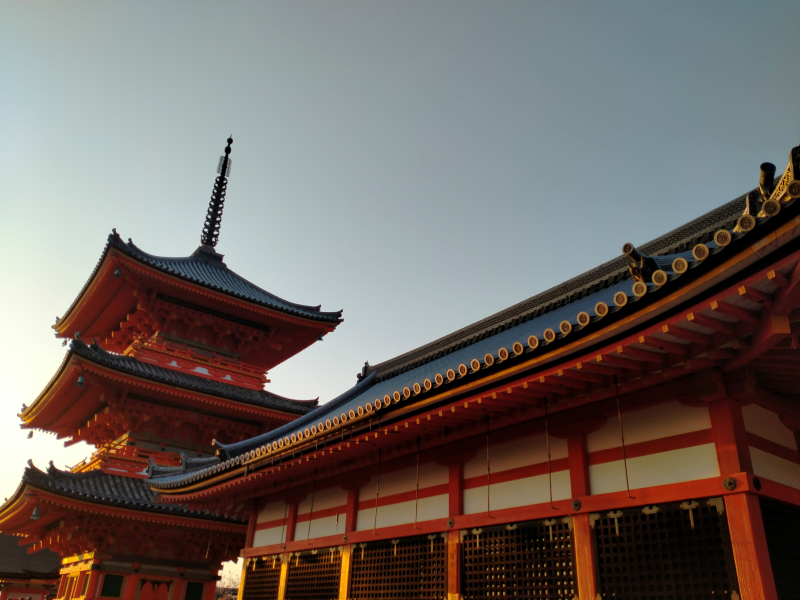
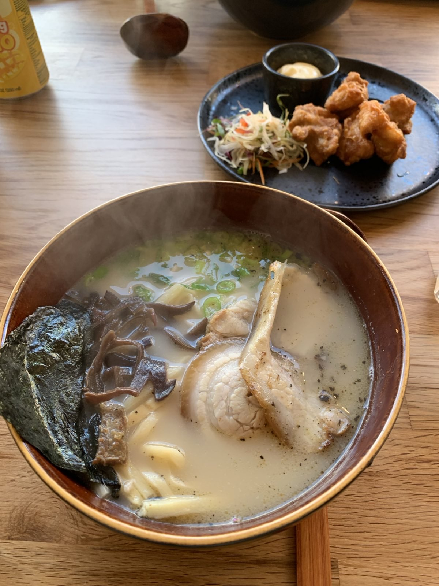
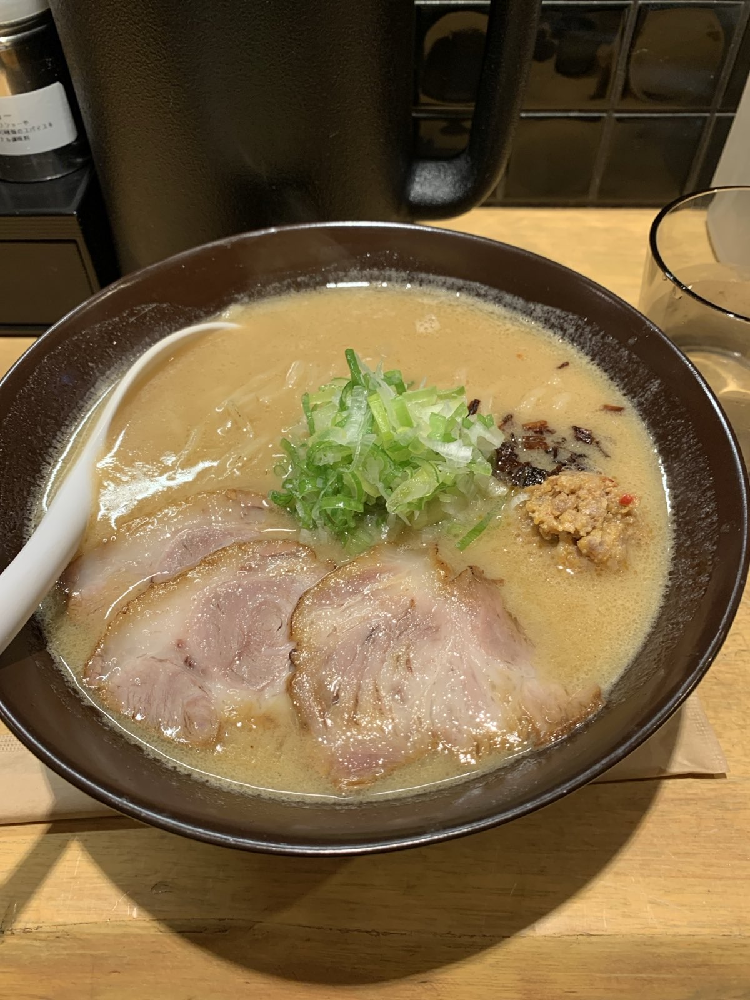
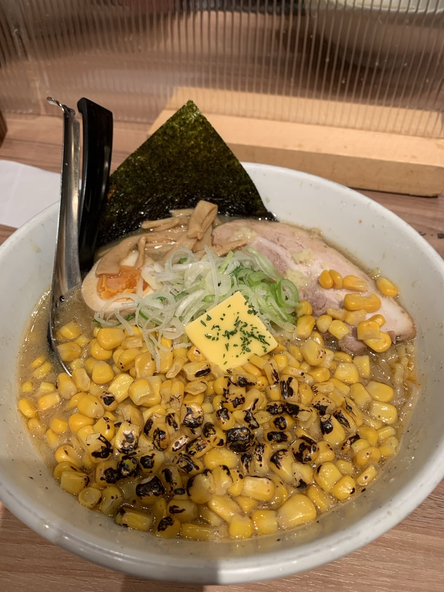

You've never tasted Ramen like this.
Our Hokkaido and Kyoto trained chefs bring you the best of Japanese Ramen
The chefs at Nori crafted their art in ancient Japanese cities. Hokaiddo in the north is renowned for rich miso broth and delectable dairy products produced in pristine air. Kyoto, further south, is epitomised by delicate and rich soy sauce flavours. Our chefs are pleased to serve the best that Ramen has to offer. Our broths are slow cooked for a minimum of 90 hours to make a rich flavour like no other.
Our chefs Our famous brothThe Ramen

The classic. Cinte Senese and Kintoa pork, wood ear mushroom, tender bamboo, green onions. Served with karaage chicken.

Gloucestershire old spot pork, 120 hour super slow cooked miso broth, green onions. 38 year aged soy sauce.

Specially imported Hokkaido butter, garden grown corn, pork, bamboo shoots and seaweed.
Later this year we're introducing take-home meals kits so you can enjoy Nori at home too.